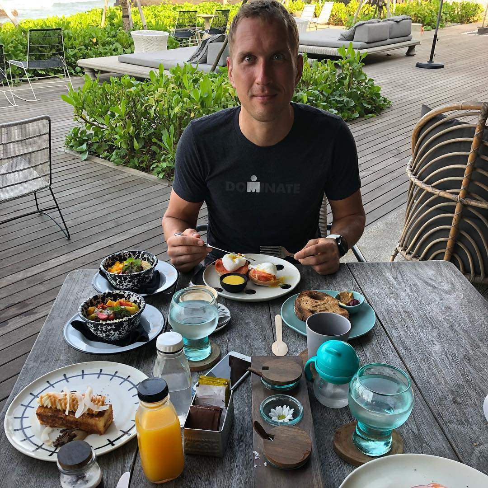
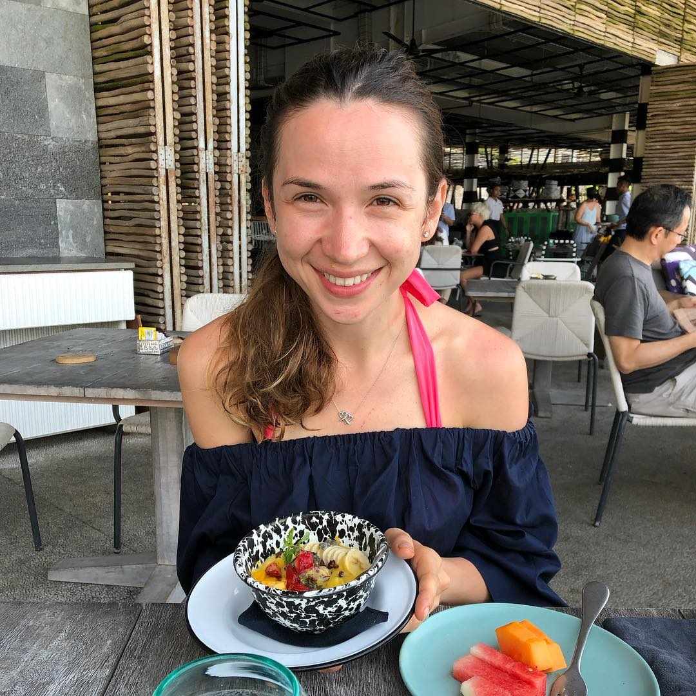
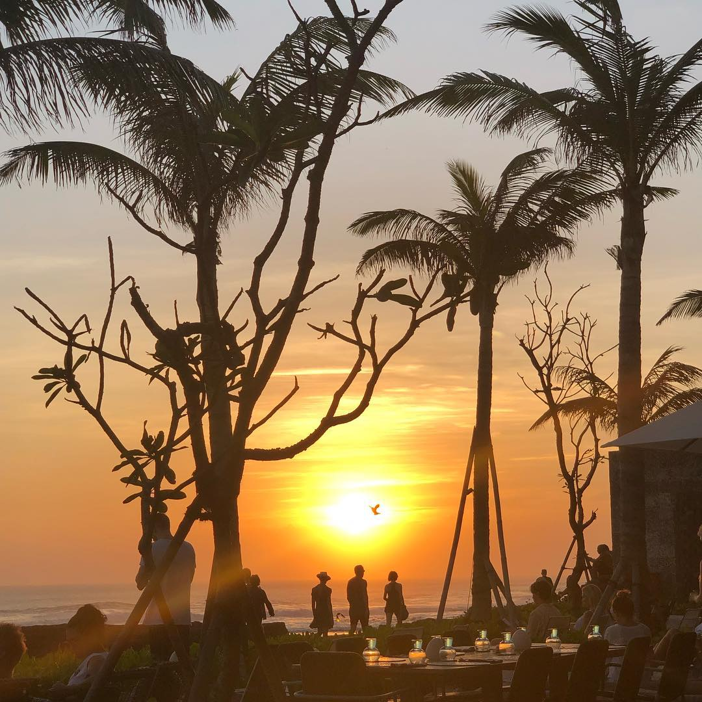
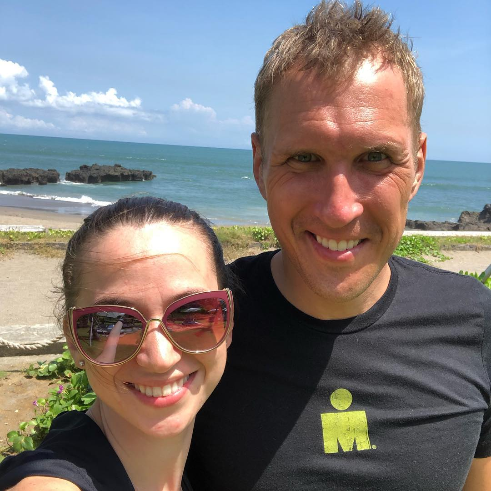

We had one of the best holidays in our life! ☺️☺️While it was quite challenging with 8 month old baby (we are still learning all young parents travel hacks, feel free to share your tips 😉), the hotel choice that we made, wiped away our stress. All of us found perfect balance: me chilling in the pool while Arthur was playing with hotel nanny for couple of hours, Arseny training his swim in 130 meter pool (the longest pool we’ve seen). Fantastic breakfasts and views, the most beautiful sunsets with live music, very good spa services, and super professional and friendly staff made our stay unforgettable. I wish we could stay longer and try yoga classes and their gym (looked very promising). Looking forward to come back already 😝! Maybe for recovery after #ironmancairns2019 in 6 weeks? 🤔😉 One thing that didn’t really work well was open water swim training as you could’ve guessed from the video 😂 those waves were better for boards. __ #comoumacanggu #comobeachclub #holiday #club21 #ironmantri #triathlontraining #swimbikerun #irunthisbody #bali #baliholiday #canggu
2019-04-29 00:12:10
Back to main page